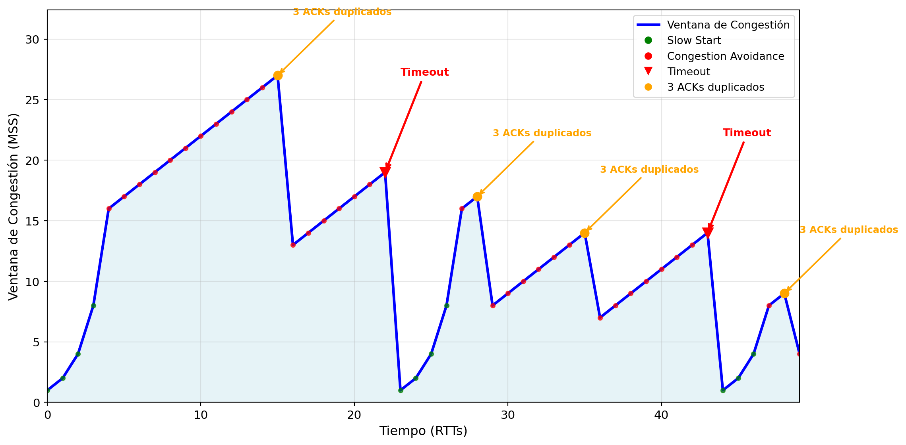

sequenceDiagram
participant A as Client A
participant I as The Internet
participant B as Server B
A->>I: Paquete UDP 1 (IP destino: 8.8.8.8, puerto: 80)
I->>B: Paquete 1 entregado
A->>I: Paquete UDP 2 (IP destino: 8.8.8.8, puerto:80)
I->>B: Paquete 2 entregado
A->>I: Paquete UDP 3 (IP destino: 8.8.8.8, puerto:80)
A->>I: Paquete UDP 4 (IP destino: 8.8.8.8, puerto:80)
I->>B: Paquete 4 entregado (llega primero!)
A->>I: Paquete UDP 5 (IP destino: 8.8.8.8, puerto:80)
I->>B: Paquete 3 entregado (llega tarde!)
4 Capa de transporte
La capa de transporte proporciona comunicación lógica entre procesos de aplicación que se ejecutan en diferentes hosts. Los protocolos de transporte se ejecutan en los hosts finales, no en el núcleo de la red. Los protocolos más comúnes son UDP y TCP, que representan los dos lados del espectro en cuanto a funcionalidades. UDP contiene lo mínimo para ser un protocolo de comunicación en la capa de transporte y TCP es un protocolo mucho más complejo pero con más garantías. La elección entre uno y otro dependerá del dominio y la aplicación.
Primero, vamos a ver un ejemplo simplificado donde un Cliente A le manda 5 paquetes a un Servidor B. Entre medias, asumimos que hay una red, internet, donde no profundizaremos por simplicidad, pero sería como en el Capítulo 3}. Podéis ver un ejemplo del escenario en Figura 4.1. En este escenario, un proceso Cliente A le envía 5 paquetes a un proceso del Servidor B. El Servicio B está referenciado a través de la IP (8.8.8.8), y dentro de B podemos identificar el proceso a través del puerto, en este caso, 80. El Cliente A envía un total de 5 paquetes, llegando al servidor, en el siguiente orden: 1, 2, 4, 3. Aquí pasan varias cosas. Lo primero, en paquete 5 no ha llegado, se “perdió” en Internet. Aproximadamente el 1% de los paquetes se pierden en condiciones normales. En UDP el paquete se perdería, y no nos enteraríamos. En TCP, el proceso se reintentaría hasta. La segunda cosa que os puede llamar la atención es que el paquete 4 llega antes que el 3. Esto puede ocurrir también, ya que los paquetes pueden tomar diferentes caminos. En UDP no tenemos información para corregir el orden, así que se entregaría primero el 4 y después el 3. En cambio, TCP cuenta con mecanismos para corregir el orden.
En los siguientes apartados veremos las funcionalidades de la Capa de Transporte, y profundizaremos en los protocolos TCP y UDP, también veremos una pequeña comparativa de juegos utilizando TCP y UDP.
4.1 Funciones principales
Las funciones principales de la capa de transporte son dividir los mensajes en el emisor en segmentos y pasarlos a la capa de red, y posteriormente en el receptor recomponer los segmentos en mensajes y pasarlos a la capa de aplicación. La interfaz entre la capa de transporte y la capa de aplicación se llama sockets y la veremos en detalle en el capítulo de la Capa de Aplicación. Por ahora, sólo es necesario tener en cuenta que a través de los sockets podemos enviar y recibir información. Es la forma que tenemos que utilizar la Capa de Transporte desde la Capa de Aplicación.
Los protocolos más comunes en la capa de transporte son TCP y UDP, que veremos a lo largo de este capítulo. Los dispositivos tienen generalmente en su kernel implementados estos protocolos y es un proceso del sistema. A través de los sockets nos podemos conectar a TCP o UDP. Este socket corre en un proceso, ya que en la Capa de Aplicación lo que se comunican son procesos entre sí. Para distinguir entre los diferentes sockets, se les otorga una identificación:
- En TCP los sockets se identifican por (IP origen, puerto origen, IP destino, puerto destino).
- En UDP los sockets se identifican por (IP origen, puerto origen).
Los puertos son identificadores numéricos desde 1 a 65535. Esta asignación puede ser manual o automática. Cuando creamos un socket en un servidor, la asignación generalmente es manual y siempre la misma, de tal forma que los procesos que se comunican lo pueden saber “de memoria”. Cuando abrimos un socket desde un cliente para conectarnos con un servidor, la asignación del puerto del cliente es aleatoria, ya que el puerto específico del cliente no es relevante.
Ahora que lo hemos visto de forma intuitiva vamos a definirlo un poco más formalmente. En la capa de transporte los protocolos tienen dos tareas comunes, la multiplexación y la demultiplexación. La multiplexación es el proceso por el cual recogemos información de diferentes sockets y lo enviamos por un único medio. Por el contrario, la demultiplexación es el proceso por el cual recibimos los segmentos por el medio único y lo enviamos a los sockets correspondientes. A modo de analogía se puede ver como un proceso de envío de cartas. La multiplexación sería el buzón de correos donde dejamos las cartas. La demultiplexación sería el personal de correos cogiendo las cartas y llevándolas a sus destinatarios. Posteriormente veremos alguna particularidad respecto a la multiplexación y demultiplexación entre TCP y UDP.
Otro concepto interesante es la tranferencia fiable, que es básicamente aquella en la que la información llega tal cual se envio. Es decir, no se corrompe ningún bit, no se pierde información (paquetes) y la información se entrega en un orden correcto. Cuando queremos una transferencia fiable tenemos dos opciones, o bien utilizamos protocolos fiables que ya lo implementen nosotros, o implementamos nosotros esas características de tal forma que podamos tener una comunicación fiable sobre un medio no fiable.
En las siguientes secciones veremos los protocolos UDP y TCP con más detalle.
4.2 Protocolos
4.2.1 UDP (User Datagram protocol)
UDP (User Datagram protocol) es un protocolo minimalista dentro de la familia de protocolos de la capa de transporte. Implementa el mínimo que debe hacer un protocolo de transporte [RFC 768]. UDP sacrifica las garantías de entrega por algo más valioso en ciertos escenarios: velocidad pura y simplicidad. Esto es especialmente útil en videojuegos interactivos, DNS o transmisión de vídeos. Las características principales de UDP son las siguientes:
- Protocolo ligero y simple: Es un protocolo basado en el principio best-effort. Esta aproximación significa que hace todo lo posible por entregar los datos al destinatario, pero no ofrece ninguna garantía sobre la entrega de los mismos, ni nos enteraremos sino se entregan debido a que se pierden o tienen errores.
- No orientado a conexión: Cuando vamos a enviar información no es necesario establecer una conexión previa entre receptor y emisor. Podríamos decir que cada paquete que se envia es autosuficiente, tiene toda la información necesaria para representar el “estado” de la conexión. Si se pierde, no hay mecanismo para recuperarlo. Esta independencia tiene grandes consecuencias. Primero, simplifica la implementación. Segundo, se elimina la necesidad del proceso de handshake típico de los protocolos orientados a conexión, reduciendo tanto la latencia inicial como la complejidad del protocolo. Tercero, reduce considerablemente los recursos necesarios en el servidor, ya que este no tiene que mantener ningún estado.
- Entrega no fiable y sin orden: UDP no ofrece ninguna garantia de entrega sobre la información que se envia. Esta información puede perderse, puede duplicarse, o pueden llegar desordenados. A veces se denomina UDP como protocolo “fire-and-forget”, es decir, que envias el paquete y te olvidas de que ha existido, independientemente de que llegue o no.
- Integridad básica: UDP tiene una comprobación de integridad a través de un checksum. Cuando el paquete llega a su receptor, UDP comprueba que el checksum es correcto, y en caso negativo, el paquete se descarta de forma silenciosa.
- Multiplexación y demultiplexación: La multiplexación y demultiplexación se realiza mediante el uso de números de puerto, que identifican de manera única los puntos finales de comunicación dentro de un host.
Respecto a las características no proporcionadas, tenemos el control de flujo, control de congestión, temporización, tasa de transferencias mínima y seguridad. Para implementar control de flujo, control de congestión y temporización necesitaríamos tener un estado en cliente y servidor, así como enviar mensajes de control, lo cual entra en conflicto con el principio de best-effort y no ser orientado a conexión. La tasa de transferencia mínima no es posible siendo agnósticos del medio de transporte y requeriría de estado en los routers, lo cual va en contra de la estructura actual de internet y dificultaría su escalabilidad. Por último, la seguridad, dependiendo del tipo de algoritmo, probablemente requiriría compartir información previamente de forma segura (claves de cifrado) o autoridades centrales como en el caso de HTTPS. En ambos casos, se complicaría el protocolo.
La simplicidad de UDP nos ofrece sin embargo, otra opción. Implementar nosotros mismos a nivel de capa de aplicación las garantías que consideremos necesarias y no pagar el “precio” por las que no vamos a utilizar. Por ejemplo, supongamos que vamos a desarrollar un juego y enviamos las actualizaciones del jugador con estos requisitos:
- Se ignorarán los paquetes fuera de orden. Si enviamos (A B C), y UDP recibe (A C B), a nivel de aplicación descataríamos B, resultando en (A C).
- Se ignorarán los duplicados. Si enviamos (A B C), UDP recibe (A A B), a nivel de aplicación descartamos la segunda A, resultando en (A B).
Para esta implementación nuestro protocolo podría añadir un número de paquete en los primeros bytes de UDP (antes de la actualización del juego), y el servidor tener un estado del último paquete que recibió. Cada vez que recibimos un paquete lo aceptamos si el número de paquete del servidor < número del paquete recibido, y lo rechazamos de otra forma. Con este pequeño y sencillo protocolo hemos conseguido ignorar paquetes fuera de orden y duplicado con una sobrecarga mínima en el protocolo, y sin la sobrecarga del resto de funcionalidades que no son necesarias.
La estructura de paquete de UDP es la siguiente:
---
title: Estructura del paquete UDP
---
packet-beta
0-15: "Source Port"
16-31: "Destination Port"
32-47: "Length"
48-63: "Checksum"
64-95: "Data (longitud variable)"
Como podéis ver la estructura del paquete es realmente simple en comparación con el resto de protocolos. El puerto de destino le permite a UDP demultiplexar correctamente el paquete, mientras el de origen le permite al servidor contestar. La longitud indica el tamaño de los datos, que es un número de 16 bits, es decir, que podría ser hasta 65535 (no incluido), pero en la práctica está limitado por el MTU. Por último, el checksum que es una forma de verificar la integridad del paquete. Esta verificación es contra cambios accidentales, pero puede ser manipulada.
El cálculo del checksum UDP sigue un procedimiento sistemático que garantiza la verificación de integridad de todo el datagrama:
- Preparación de datos: Se concatena la pseudo-cabecera IP, la cabecera UDP (con checksum inicializado a cero) y los datos de aplicación, añadiendo un byte de padding si la longitud total es impar.
- Cálculo aritmético: Los datos se dividen en palabras de 16 bits que se suman usando aritmética de complemento a uno, incorporando cualquier carry al resultado final
- Complemento final: Se calcula el complemento a uno del resultado y se inserta en el campo checksum de la cabecera UDP.
El proceso de verificación en el receptor utiliza el mismo algoritmo pero incluye el checksum recibido en el cálculo, esperando obtener 0xFFFF si no hay errores. Si el resultado difiere de 0xFFFF, el datagrama se descarta silenciosamente sin notificación al emisor. La pseudo-cabecera proporciona verificación adicional del direccionamiento correcto, validación del protocolo UDP, y consistencia entre las longitudes reportadas por IP y UDP. Es importante tener en cuenta, que el mecanismo solo detecta errores pero no los corrige, y UDP no implementa retransmisión automática de datagramas corruptos.
TipCálculo de checksum en UDP
function calculateUDPChecksum(srcIP, dstIP, srcPort, dstPort, data) {
// Convert string data to Uint8Array if needed
if (typeof data === 'string') {
data = new TextEncoder().encode(data);
}
const udpLength = 8 + data.length;
// Build complete packet: pseudo-header + UDP header + data
const packet = [
// Pseudo-header (12 bytes)
...srcIP.split('.').map(x => parseInt(x)), // Source IP (4 bytes)
...dstIP.split('.').map(x => parseInt(x)), // Dest IP (4 bytes)
0, 17, // Zero + Protocol UDP (2 bytes)
(udpLength >> 8) & 0xFF, udpLength & 0xFF, // UDP length (2 bytes)
// UDP header (8 bytes)
(srcPort >> 8) & 0xFF, srcPort & 0xFF, // Source port (2 bytes)
(dstPort >> 8) & 0xFF, dstPort & 0xFF, // Dest port (2 bytes)
(udpLength >> 8) & 0xFF, udpLength & 0xFF, // UDP length (2 bytes)
0, 0, // Checksum placeholder (2 bytes)
// Data payload
...Array.from(data)
];
// Calculate 16-bit one's complement checksum
let sum = 0;
for (let i = 0; i < packet.length - 1; i += 2) {
sum += (packet[i] << 8) + packet[i + 1];
}
// Handle odd length
if (packet.length % 2 === 1) {
sum += packet[packet.length - 1] << 8;
}
// Add carry bits and return one's complement
while (sum >> 16) sum = (sum & 0xFFFF) + (sum >> 16);
return (~sum) & 0xFFFF;
}UDP es especialmente adecuado para aplicaciones donde la velocidad prima sobre la garantía de entrega, incluyendo multimedia streaming (tolerante a pérdidas menores pero sensible a interrupciones por control de congestión), consultas DNS que requieren respuestas rápidas, protocolos de administración de red como SNMP, sistemas de enrutamiento como RIP, gaming online donde la latencia baja es crítica, y como base para protocolos modernos de transporte como QUIC/HTTP3 que implementan sus propios mecanismos de confiabilidad optimizados.
4.2.2 TCP (Transmission Control Protocol)
TCP (Transmission Control Protocol) es el protocolo de transporte más utilizado en Internet y representa el extremo opuesto a UDP en términos de garantías y complejidad [RFC 793]. TCP prioriza la confiabilidad y el orden de los datos sobre la velocidad pura, siendo fundamental para aplicaciones como navegadores web, correo electrónico, transferencia de archivos y cualquier servicio que requiera integridad absoluta de los datos. Las características principales de TCP son las siguientes:
- Protocolo confiable y complejo: TCP implementa múltiples mecanismos para garantizar que todos los datos enviados lleguen al destinatario en el orden correcto y sin errores. Esta confiabilidad viene al costo de mayor complejidad, latencia y overhead del protocolo.
- Orientado a conexión: Antes de enviar cualquier dato, TCP requiere establecer una conexión formal entre cliente y servidor mediante un proceso de handshaking de tres fases. Esta conexión mantiene estado en ambos extremos, permitiendo el seguimiento de cada byte enviado y recibido.
- Entrega fiable y ordenada: TCP garantiza que todos los datos enviados lleguen al destinatario exactamente una vez y en el mismo orden en que fueron enviados. Implementa mecanismos de detección de pérdidas, duplicados y reordenamiento automático.
- Control de flujo: TCP implementa mecanismos para evitar que el emisor sature al receptor, ajustando automáticamente la velocidad de envío según la capacidad de procesamiento del destinatario a través del campo “Window”.
- Control de congestión: TCP detecta y responde a la congestión de la red, reduciendo automáticamente su tasa de transmisión cuando detecta pérdidas o aumentos en la latencia, contribuyendo así a la estabilidad general de Internet.
- Multiplexación y demultiplexación: Al igual que UDP, TCP utiliza números de puerto para identificar los diferentes servicios y aplicaciones en un mismo host.
Respecto a las características que TCP no proporciona, tenemos la temporización específica, tasa mínima garantizada de transferencia y seguridad nativa. TCP no puede garantizar una tasa mínima de transferencia porque debe adaptarse dinámicamente a las condiciones cambiantes de la red. La temporización específica no es posible debido a la naturaleza variable de Internet y los mecanismos de retransmisión que pueden introducir retrasos impredecibles. La seguridad debe implementarse en capas superiores (como TLS/SSL) ya que TCP se centra únicamente en la confiabilidad del transporte.
La robustez de TCP permite que las aplicaciones se enfoquen en su lógica de negocio sin preocuparse por los detalles de la transmisión de datos. Por ejemplo, cuando un navegador web solicita una página:
- TCP garantiza que todos los bytes del HTML, CSS, JavaScript e imágenes lleguen completos y en orden.
- Si algún paquete se pierde en la red, TCP lo detecta y retransmite automáticamente.
- Si la red se congestiona, TCP reduce su velocidad para no empeorar la situación.
- El navegador recibe los datos como si fuera un flujo continuo y confiable de bytes.
La estructura de paquete de TCP es considerablemente más compleja que UDP:
--- title: Estructura del paquete TCP --- packet-beta 0-15: "Source Port" 16-31: "Destination Port" 32-63: "Sequence Number" 64-95: "Acknowledgment Number" 96-99: "Data Offset" 100-105: "Reserved" 106: "URG" 107: "ACK" 108: "PSH" 109: "RST" 110: "SYN" 111: "FIN" 112-127: "Window" 128-143: "Checksum" 144-159: "Urgent Pointer" 160-191: "Options (variable)" 192-255: "Data (variable length)"
Como se puede observar, la cabecera TCP es mucho más rica en información que UDP. Los puertos de origen y destino funcionan igual que en UDP para la multiplexación. El número de secuencia identifica la posición del primer byte de datos en el flujo, mientras que el número de acknowledgment indica el siguiente byte que el receptor espera recibir, implementando así el mecanismo de confirmación acumulativa.
Los flags de control son cruciales para el funcionamiento de TCP: - SYN: Utilizado para sincronizar números de secuencia durante el establecimiento de conexión - ACK: Indica que el campo de acknowledgment es válido - FIN: Señala el fin de los datos del emisor - RST: Fuerza el reinicio de la conexión - PSH: Solicita entrega inmediata al proceso aplicación - URG: Indica datos urgentes
El campo Window implementa el control de flujo, indicando cuántos bytes está dispuesto a recibir el destinatario. El checksum funciona de manera similar a UDP pero cubriendo todo el segmento TCP.
4.2.2.1 Establecimiento de Conexión: Handshake de Tres Fases
El proceso de establecimiento de conexión TCP es un ejemplo de sincronización distribuida:
sequenceDiagram
participant CS as Cliente Socket
participant SS as Server Socket (listen)
participant NS as Nuevo Socket
Note over CS: Estado: CLOSED
Note over SS: Estado: LISTEN
CS->>SS: SYN=1, seq=x
Note over CS: Estado: SYN_SENT
Note over SS: accept() crea nuevo socket
SS->>NS: Deriva conexión
Note over NS: Estado: SYN_RCVD
NS->>CS: SYN=1, ACK=1, seq=y, ack=x+1
Note over CS: Estado: ESTABLISHED
CS->>NS: ACK=1, seq=x+1, ack=y+1
Fase 1 - SYN: El cliente envía un segmento con SYN=1 y un número de secuencia inicial aleatorio (x). Este número aleatorio es crucial para la seguridad, evitando ataques de predicción de secuencia.
Fase 2 - SYN+ACK: El servidor responde con SYN=1, ACK=1, su propio número de secuencia inicial (y) y confirma el número del cliente incrementado en uno (ack=x+1).
Fase 3 - ACK: El cliente confirma el número de secuencia del servidor (ack=y+1), estableciendo oficialmente la conexión bidireccional.
Durante este proceso se negocian parámetros importantes como el MSS (Maximum Segment Size), opciones de ventana deslizante y otras extensiones TCP.
4.2.2.2 Mecanismos de Confiabilidad
TCP implementa varios mecanismos para garantizar la entrega confiable. Números de Secuencia y ACKs: Cada byte en el flujo TCP tiene un número de secuencia único. Los ACKs son acumulativos, lo que significa que un ACK para el byte N confirma la recepción correcta de todos los bytes desde el inicio hasta N-1. Detección de Pérdidas: TCP utiliza dos métodos principales:
- Timeout: Si no recibe ACK en un tiempo determinado, asume pérdida y retransmite.
- ACKs duplicados: Si recibe tres ACKs duplicados para el mismo número de secuencia, asume pérdida del siguiente segmento y retransmite inmediatamente (Fast Retransmit).
sequenceDiagram
participant E as Emisor
participant R as Receptor
E ->> X: seq=100, data="A", Paquete perdido
Note over E: Timeout de seq:100, reenvio
E ->> R: seq=100, data="A",
sequenceDiagram
participant E as Emisor
participant R as Receptor
E ->> X: seq=100, data="A", Paquete perdido
E ->> R: seq=101, data="B"
E ->> R: seq=102, data="C"
E ->> R: seq=103, data="D"
R ->> E: ACK=100
R ->> E: ACK=100
R ->> E: ACK=100
Note over E,R: Retransmisión rápida
E ->> R: seq=100, data="A"
4.2.2.3 Control de Flujo
TCP mantiene buffers tanto en emisión como en recepción, permitiendo el manejo de segmentos fuera de orden y la optimización del flujo de datos. El control de flujo TCP es un mecanismo sofisticado que previene el desbordamiento del receptor:
sequenceDiagram
participant E as Emisor
participant R as Receptor
Note over R: Buffer: 4KB libres
R->>E: ACK=1000, Window=4096
E->>R: seq=1000, data=2KB
Note over R: Buffer: 2KB libres
R->>E: ACK=3000, Window=2048
E->>R: seq=3000, data=2KB
Note over R: Buffer: 0KB libres (lleno)
R->>E: ACK=5000, Window=0
Note over E: Detiene envío, inicia probe timer
Note over R: Aplicación lee datos, libera 1KB
E->>R: seq=5000, data=1 byte (window probe)
R->>E: ACK=5001, Window=1024
E->>R: seq=5001, data=1KB
La VentanaRecepcion se calcula como:
VentanaRecepcion = BufferRecepcion - (UltimoByteRecibido - UltimoByteLeido)El emisor debe asegurar que:
UltimoByteEnviado - UltimoByteReconocido ≤ VentanaRecepcionCuando la ventana de recepción se reduce a cero, el emisor detiene el envío pero continúa sondeando periódicamente con segmentos de un byte para detectar cuándo hay espacio disponible nuevamente.
4.2.2.4 Control de Congestión
El control de congestión TCP es uno de los algoritmos más importantes de Internet. Utiliza la ventana de congestion para regular la velocidad de envío. La ventana de congestión es una variable del emisor que representa el número máximo de bytes que pueden estar en el “aire” en la red, es decir, el número máximo de bytes que pueden ser enviados sin que sean reconocidos (ack). Se combina con la ventana de recepción para determinar la tasa de envio actual, siendo la tasa efectiva el mínimo de ambas. La ventana da de congestión se regula en base a dos mecanismos:
- Slow start (arranque lento): Se inicia con una ventana de congestión igual a 1 MSS. Duplica la ventana cada RTT (ver ejemplo en (slow-start?)) hasta detectar pérdida o alcanzar un umbral. Es decir, el tamaño crece exponencialmente y es ideal para descubrir el ancho de banda.
- Congestion avoidance (evitación de congestión): Tiene un comportamiento más conservador. Incrementa 1 MSS por cada RTT, ver el ejemplo en (congestion-avoidance?).
y dos eventos que regulan el paso entre los dos mecanismos:
- Salta un temporizador: Pérdida severa. Se reduce la ventana de congestión a 1 MSS y pasamos a modo slow start.
- Tres ACK duplicados: Pérdida no tan several, se reduce la ventana de congestión a la mitad.
sequenceDiagram
participant E as Emisor
participant R as Receptor
Note over E: Slow Start: cwnd=1 MSS
E->>R: seq=1000, MSS=1KB
R->>E: ACK=2000
Note over E: cwnd=2 MSS
E->>R: seq=2000, MSS=1KB
E->>R: seq=3000, MSS=1KB
R->>E: ACK=3000
R->>E: ACK=4000
Note over E: cwnd=4 MSS (crecimiento exponencial)
Note over E: ... continúa hasta threshold o detectar pérdida ...
- Mecanismo de congestión slow start.
sequenceDiagram
participant E as Emisor
participant R as Receptor
Note over E: Congestion Avoidance: cwnd=1 MSS
E->>R: seq=1000, MSS=1KB
R->>E: ACK=2000
Note over E: cwnd=2 MSS
E->>R: seq=2000, MSS=1KB
E->>R: seq=3000, MSS=1KB
R->>E: ACK=3000
R->>E: ACK=4000
Note over E: cwnd=3 MSS (crecimiento lineal)
Note over E: ... continúa hasta detectar pérdida ...
- Mecanismo de congestión congestion avoidance.
Este mecanismo crea el característico patrón de “diente de sierra” en el throughput de TCP, donde la ventana crece gradualmente hasta detectar congestión, se reduce drásticamente, y vuelve a crecer.
<Figure size 1344x768 with 0 Axes>
4.2.2.5 Terminación de Conexión
La terminación de conexión TCP requiere un proceso de cuatro fases debido a su naturaleza full-duplex:
sequenceDiagram
participant C as Cliente
participant S as Servidor
Note over C,S: Conexión establecida - transferencia de datos
C->>S: FIN=1, seq=x
Note over C: Estado: FIN_WAIT_1
Note over S: Estado: CLOSE_WAIT
S->>C: ACK=1, ack=x+1
Note over C: Estado: FIN_WAIT_2
Note over S: Aplicación termina, cierra socket
S->>C: FIN=1, ACK=1, seq=y, ack=x+1
Note over S: Estado: LAST_ACK
Note over C: Estado: TIME_WAIT
C->>S: ACK=1, seq=x+1, ack=y+1
Note over S: Estado: CLOSED
Note over C: Espera 2*MSL (TIME_WAIT)
Note over C: Estado: CLOSED
- FIN del Cliente: El cliente envía FIN indicando que terminó de enviar datos
- ACK del Servidor: El servidor confirma la recepción del FIN
- FIN del Servidor: El servidor envía su propio FIN cuando termina de enviar
- ACK del Cliente: El cliente confirma y entra en estado TIME_WAIT
El estado TIME_WAIT es crucial para manejar ACKs retrasados y asegurar que la conexión se cierre completamente.
4.2.2.6 Equidad y Coexistencia
TCP está diseñado para ser “fair” cuando múltiples conexiones comparten el mismo enlace. El algoritmo de control de congestión asegura que N conexiones TCP compartan equitativamente un enlace de capacidad R, obteniendo aproximadamente R/N cada una.
Sin embargo, esta equidad tiene limitaciones: - Aplicaciones UDP: No implementan control de congestión, pueden monopolizar ancho de banda. - Conexiones paralelas: Una aplicación puede abrir múltiples conexiones TCP para obtener mayor throughput. - RTT diferentes: Conexiones con menor RTT pueden obtener ventaja.
4.3 Comparativa de TCP vs UDP para videojuegos
La decisión de elegir entre TCP y UDP depende de la interactividad y la tolerancia a pérdidas de información del juego. Por ejemplo, si se requiere de latencias de menos de 50ms, con actualizaciones frecuentes y la información nueva es más valiosa que la vieja, UDP es el claro ganador. Esto se consigue gracias a unas cabeceras mucho más pequeñas y la ausencia de tráfico de control. Otro aspecto positivo es que el servidor necesita menos recursos, al no tener que gestionar la lógica de gestión ni mantener el estado. Algunos videojuegos donde UDP es mejor opción es en shooters o juegos de lucha debido a su alta interactividad.
Por contra, si la latencia es de 100ms a 200ms, se necesita una entrega ordenada garantizada y detección y corrección de errores, TCP es la mejor opción. Con tolerancias de latencia mayores, no tenemo que preocuparnos por bloqueo de cabeza de línea, es decir, que un paquete perdido impida el procesamiento de los posteriores que ya llegaron. También tendríamos que tener en cuenta las latencias variables, debido a retransmisiones, lo cual podría generar saltos de estado, incluso con tolerancias de 100ms. Por último, consider también que incurriremos en un mayor tráfico de red, tanto por el tráfico de control como por el mayor tamaño de los paquetes TCP. Los juegos de rol y por turnos son ejemplos de juegos que se adaptan muy bien a TCP.
Pasando a ejemplos concretos, World of Warcraft es un ejemplo de juego implementaado sobre TCP. Los hechizos y ataques necesitan entrega garantizada para mantener la consistencia, así como la actualizaciones del inventario y estado de las misiones. Generalmente los MMORPGs pueden soportar latencias de 100s a 200ms.
En el caso de Counter Strike se utiliza UDP debido a que la retroalimentación inmediata es más importante que la entrega garantizada. Por ejemplo, las actualizaciones de posición y disparos necesitan una latencia muy baja. Es tan importante, que aún con UDP, es necesario utilizar técnicas de interpolación de estados en los clientes para conseguir transiciones suaves. Esta interpolación limita el efecto de paquetes perdidos.